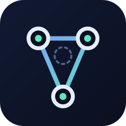

hostless
Multiplayer for static sites that refuses to disconnect.
Players meet with a room code. Traffic goes over WebRTC when it works, and over public Nostr relays and MQTT brokers when it does not. A closed tab doesn't lose the match. There is no server.
Open a demoCreate a room: you get a code and a link.
Send the linkOpen it on a phone or in another browser.
Break thingsTurn off Wi-Fi, reload the tab, switch to a VPN. The game carries on.
⭕
Tic-tac-toe
A turn-based match. Every move is signed and verified on both devices, and the game resumes after a reload.
🎨Co-op canvas
Everyone paints at once, and every screen ends up with the same picture.
👆Synced clicker
Your progress follows you to your other devices, and you can see the totals of every player.
📡Connection check
Which relays this network reaches, and whether a direct WebRTC link is likely.
Every path at onceWebRTC, Nostr and MQTT, with one reliable, ordered link per player.
Survives the tabMoves are written to disk before they are sent.
PrivateRelays see random topics and ciphertext, and every move is signed.
~35 KB gzipThe WebRTC part loads only when it is used.